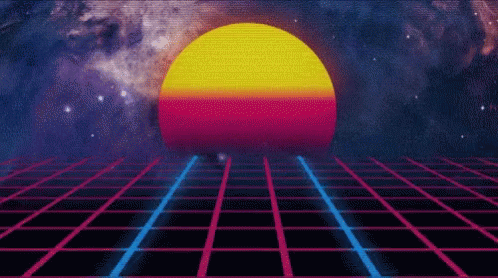

Jere Rinčić's Page of a e s t h e t i c i s m

O ovoj stranici
Što reći, nego da je u pitanju samo jedna mala bijedna stranica napisana u html-u.
Jedna i jedna tražilica, Google!
Nauči i ti napraviti svoju HTML stranicu pomoću ovog pdf dokumenta!
Neki fora bendovi!
- The Police
- Casiopea
- Duran Duran
Neki fora filmovi!
- Akira(1988.)
- Stargate(1994.)
- The Thing(1982.)
----------The other page----------